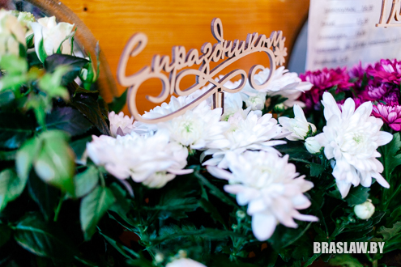
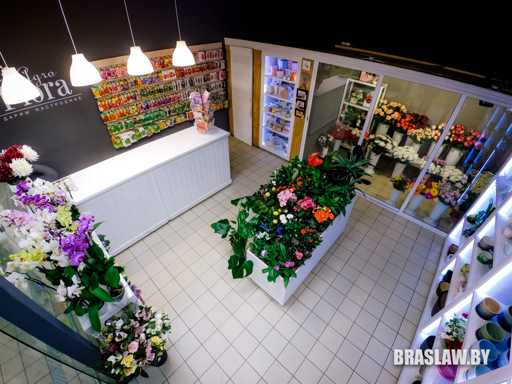

Где в Браславе купить цветы к 8 марта?

Пять лет назад наш портал писал о том, где в Браславе можно купить цветы ко дню святого Валентина и 8 марта. Сегодня мы пробежались по городу и узнали, что изменилось за это время, появились ли новые цветочные точки, и какие цены на цветы ждут браславчан в международный женский день. А также подготовили для вас интерактивную карту, где обозначены координаты и время работы этих точек.
НИНА ЯРОЦКАЯ
ГДЕ: площадка в ТЦ "Виталич", площадка возле кафе "Пена", площадка возле "Родного кута"
КОГДА: 6-8 марта
ЧТО: тюльпаны
ЦЕНЫ: 2 рубля (при покупке большого количества цена оговаривается отдельно)
СВЯЗЬ: +375 29 3203879, ВК
Нина - единственная в Браславе, кто не привозит, а выращивает цветы сама. Этим делом "горит" уже 6 лет, последние два из которых посвятила себя тюльпанам. Ее шикарную клумбу возле райисполкома видел каждый браславчанин. Следить за тюльпанами в теплице очень непросто: чтобы цветы выросли как раз на 8 марта, их нужно высаживать 25 октября. Один градус плюс-минус в теплице решает все, но девушке забота о цветах очень нравится. Это ценят и местные жители, которые обращаются к ней за красивыми букетами. Еще Нина занимается голландскими семенами, удобрениями, однолетними цветами и туями. Найти девушку можно каждый день на рынке, а 6-8 марта ее тюльпаны будут продаваться сразу на 3 площадках, обозначенных на нашей карте.
Кстати, если позвонить заранее, то возможна доставка цветов с 20.00 до 22.00.
ПАВИЛЬОН "БУКЕТ"
ГДЕ: ТЦ "Виталич"
КОГДА: каждый день кроме вторника с 8 до 18 (обед 14-15), суббота - 8-15, воскресенье - 9-15
ЧТО: тюльпаны, розы, хризантемы, гвоздики, ирисы, орхидеи, герберы, экзотические цветы
ЦЕНЫ: тюльпаны, гвоздики - 2 рубля; розы - от 3 до 6
СВЯЗЬ: +375 29 2966413, ВК, ОК
В павильоне "Букет", который расположен в ТЦ "Виталич" (поворот налево перед "Аптекой") цветы можно выбирать целую вечность. Кроме стандартного "восьмомартовского" набора, тут огромный выбор экзотических цветов в горшках - альстрамерия, эустома, различная зелень для формирования букетов.
Тут вам помогут создать красивую подарочную композицию, упакуют цветы в пленку, крафтовую бумагу, сетку или корзиночку. Причем выбор есть под разный бюджет. Кроме этого, в павильоне много интересных открыток, сувениров, керамические горшочки и вазы, и даже гелиевые шары, которые вам надуют на месте. Занимаются в "Букете" и свадебной тематикой - вы найдете бутоньерки, топперы, красивые бокалы и конфетти, фоторамки и подарочные свечи. Еще тут будет интересно тем, кто любит садить овощи и цветы - в павильоне большой выбор семян и луковиц, грунтов и удобрений.
Павильон предлагает доставку цветов по городу и району (от 30 рублей - бесплатно), а также работает с организациями по безналичному расчету.

ПАВИЛЬОН "ЦВЕТЫ"
ГДЕ: рынок, павильон №37
КОГДА: каждый день с 8 до 14 (выходной - понедельник)
ЧТО: почти то же, что в "Букете"
ЦЕНЫ: те же, что в "Букете"
СВЯЗЬ: +375 29 2966413, ОК
Павильон №37 на рынке (он же "Цветы") предлагает ассортимент, схожий с тем, что мы увидели в "Букете". Найти его просто - находится сразу за обменником на рогу.
ПАВИЛЬОН "AGROFLORA"
ГДЕ: ТЦ "Евроопт"
КОГДА: 7-8 марта с 9 до 21; а вообще понедельник-пятница с 10 до 19, суббота-воскресенье с 10 до 15
ЧТО: почти все, что нужно джентльмену, чтобы порадовать свою даму
ЦЕНЫ: розы - от 4.5 рублей, кустовые розы - от 5,5, розы в горшках - от 20, хризантемы - от 5, тюльпаны - от 2, герберы - от 4.5, гвоздики - от 1.8, орхидеи - от 30
СВЯЗЬ: +375 29 5198124, +375 29 7129820, +375 44 7886541, ВК, Instagram

В магазине "Агрофлора" найдется все, чтобы порадовать любимую женщину на 8 марта. Тут очень большой выбор цветов, свадебных букетов, цветочных композиций, подарочных коробочек, керамических горшков, ваз, открыток и другой праздничной продукции. Елена и Алла Садовские с радостью соберут вам идеальный букет и упакуют его в красивую бумагу или коробку.
До 8 марта магазин доставляет цветы бесплатно, а в праздничный день доставка будет стоить 5 рублей.
Приятным бонусом 7-8 марта станет 5% скидка на любой товар для владельцев дисконтной карты "Евроопта".

ПАВИЛЬОН "ФЛОРИЯ"
ГДЕ: ул. Октября (за магазином "Пинскдрев" [бывший магазин "Бережье"])
КОГДА: с 5 по 7 марта - 8-21, 8 марта - 7-20; а вообще вторник-пятница с 9 до 18 (обед с 13 до 14), суббота-воскресенье с 9 до 13. Выходной - понедельник
ЧТО: тюльпаны, хризантемы, розы и много других цветов
ЦЕНЫ: тюльпаны по 2 рубля,гвоздики - 2, розы от 3, хризантемы, герберы, альстрамерия - от 3.50
СВЯЗЬ: +375 29 8132012; ВК ; [email protected]
В цветочной лавке "Флория" богатый выбор цветов: орхидеи, примулы, фиалки, розы, хризантемы, цикломены, азалия. Много красивых горшочков, сувенирной продукции. Мало кто знает, что владелица магазинчика Настя Даргель формировала букет самому Президенту!
Магазин может работать с организациями по безналичному расчету. При заказе от 15 рублей доставка по городу бесплатная.
ПАВИЛЬОН "ПЕРШАЦВЕТ"
ГДЕ: рынок
КОГДА: живые цветы 7-8 марта; а вообще каждый день с 8 до 15 (выходной - понедельник)
ЧТО: тюльпаны, хризантемы, розы
ЦЕНЫ: тюльпаны - 2 рубля
СВЯЗЬ: +375 29 2019087
В павильоне "Першацвет" живые цветы будут продаваться только 7-8 марта. Предприниматель планирует привезти тюльпаны, хризантемы и розы.
В основном магазинчик занимается семенами, удобрениями, грунтами. Но есть и небольшой выбор сувениров, горшочков. Тут вас с радостью проконсультируют по вопросам высадки, помогут определиться с выбором грунтов. Кстати, это один из немногих в Браславе павильонов, у которого название на беларусском языке
Подготовил Гальляш Сялява,
фото автора и perepelka